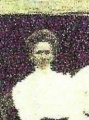
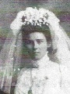
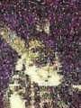
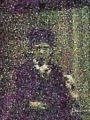

- Sophia (Eggers) Schuette (1879-1962)
- Sophia was the first child of Heinrich and Sophie, born August 20, 1879, in Campbell Hill. She married Henry Schuette (1866-1948) on September 2, 1897, in Campbell
Hill, and together they had six children:
- Alma (Schuette) Alms (1898-1967)
- Clara (Schuette) Heinks (1900-1927)
- Herman Schuette (1903-1965)
- Albert Heinrich Hermann Rudolph Schuette (1908-1925)
- Frieda (Schuette) Krantz (1911-2003)
- Erna (Schuette) Biermann (1918-2008)
- Bertha A. (Eggers) Ohlau (1884-1967)
- Bertha was the second child of Heinrich and Sophie, born August 30, 1884, in Jackson County, IL. She married Hermann Friedrich Ohlau (1882-1944) on November 5,
1905, in Campbell Hill. Together they had four children:
- Anna Dorothea Sophia (Ohlau) Clasen (1906-1983)
- Arthur A. Ohlau (1909-2007)
- Edgar H. Ohlau (1917-1986)
- Melvin Marcus Ohlau (1926-2000)
- Frieda (Eggers) Wachsnicht (1888-1966)
- Frieda was the third child of Heinrich and Sophie, born May 20, 1888, in Campbell Hill. She married Fred "Fritz" Wachsnicht (1891-1949) on October 16, 1913, in Jackson
County. Together they had five children:
- Anna D. (Wachsnicht) Hornbostel (1914-1991)
- Fred H. Wachsnicht (1917-1977)
- Esther Wachsnicht (May 1921 - Jun. 1921)
- Homer Wachsnicht (1923-1934)
- Leroy Wachsnicht (Nov. 3-27, 1928)
- Emma Louise Wilhelmine (Eggers) Meyerhoff (1890-1970)
- Emma was the fourth and middle child of Heinrich and Sophie, born May 22, 1890, in Randolph County. She married Adolph Heinrich Wilhelm August Meyerhoff (1880-1967)
on May 25, 1911, in Jackson County. Together they had nine children:
- Raymond Henry Meyerhoff (1912-2004)
- Edna Sophie (Meyerhoff) Wettig (1914-2002)
- Alfred William Meyerhoff (1916-2001)
- Albert August eyerhoff (1917-2004)
- Irene (Meyerhoff) Steffens (1919-2010)
- Infant Son Meyerhoff (born and died December 25, 1922)
- Esther (Meyerhoff) Beckman (1924-2017)
- Ruby Meyerhoff (1927-1931)
- Verna (Meyerhoff) Golding (1931-1992)
- Georg Heinrich Hermann Eggers (1894-1900)
- Georg was the fifth child and first son of Heinrich and Sophie, born January 1, 1894, in Randolph County. He died November 4, 1900, at the young age of 6. He was buried in Saint John Lutheran Cemetery in Campbell Hill.
- Anna F. (Eggers) Stromeyer (1899-1987)
- Anna was the sixth child of Heinrich and Sophie, born June 3, 1899, in Percy, IL. She married Herbert D. Stromeyer (1893-1986) on April 29, 1923, in Campbell Hill. Together they had one son, Norman Herman Stromeyer (1923-2001). Herbert passed away on December 9, 1986, in Percy, at the age of 93. Anna followed him in death one year later on September 5, 1987, in Carbondale, IL, at the age of 88. They were buried in Saint John Lutheran Cemetery.
- Ferd L. W. Eggers (1902-1984)
- Ferd was the seventh and final child of Heinrich and Sophie, born February 12, 1902, in Percy. He married Elda Gerberding (1910-1988) on May 3, 1928, in Campbell Hill. I do not have records of any children. Ferd passed away on February 15, 1984, in Percy, at the age of 82. Elda followed him in death four years later on January 12, 1988, in Percy, at the age of 77. They were buried in Saint John Lutheran Cemetery.
 Frieda (Eggers) Wachsnicht
 Emma (Eggers) Meyerhoff (1911)
 Adolph Meyerhoff
Adolph Meyerhoff
 Anna (Eggers) Stromeyer
 Ferd Eggers